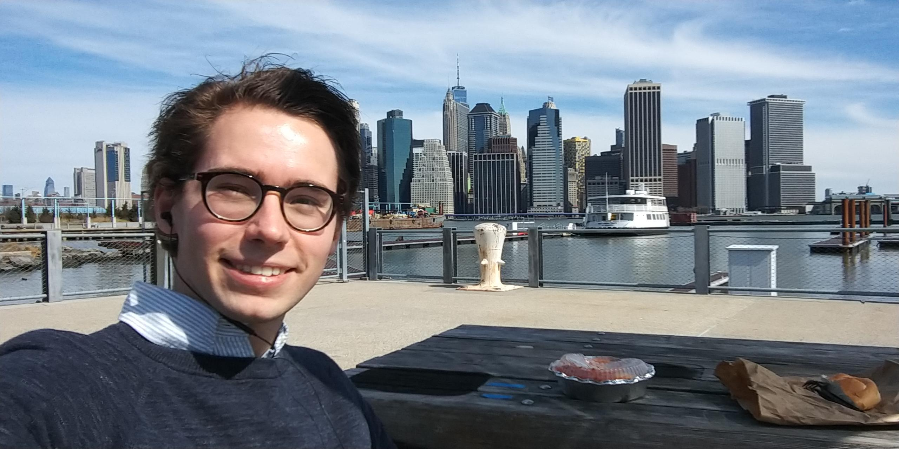

Welcome to my personal webpage. I will use it to share information on useful topics.
 I am Jan van Staalduinen, a PhD candidate researching (medical) liability for AI algorithms. I hold a MSc in Bioinformatics and an LLM in Private Law.